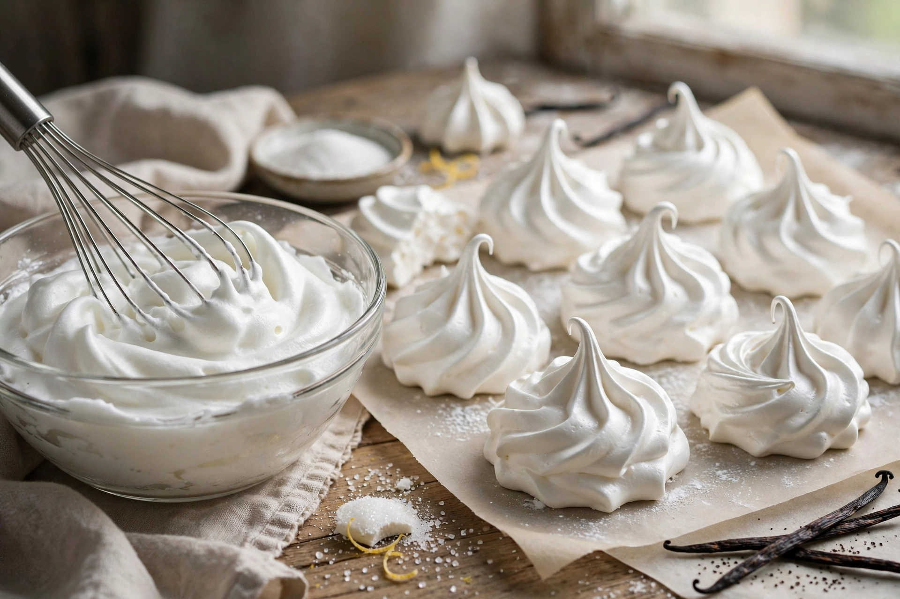

Meringue is a type of dessert or candy made from whipped egg whites and sugar, sometimes with an acidic ingredient such as lemon or cream of tartar.

| Meringue | |
|---|---|
| Type | Confection |
| Main ingredients | Egg whites, sugar |
| Variations | French, Swiss, Italian |
French meringue is uncooked whipped whites with caster sugar. Swiss meringue is heated over a bain-marie. Italian meringue is made with hot sugar syrup. All produce stable foams via denatured egg proteins.
Used for pavlova, lemon meringue pie, baked Alaska, macarons, floating islands, and as crisp shells or toppings browned with heat.
Claimed origins include the Swiss village of Meiringen and 17th-century cookbooks; François Massialot's 1692 book gave an early recipe.